UDN
Search public documentation:
CollisionReference
日本語訳
中国翻译
한국어
Interested in the Unreal Engine?
Visit the Unreal Technology site.
Looking for jobs and company info?
Check out the Epic games site.
Questions about support via UDN?
Contact the UDN Staff
中国翻译
한국어
Interested in the Unreal Engine?
Visit the Unreal Technology site.
Looking for jobs and company info?
Check out the Epic games site.
Questions about support via UDN?
Contact the UDN Staff
UE3 Home > Static Meshes > Collision Reference
UE3 Home > Physics > Collision Reference
UE3 Home > Environment Artist > Collision Reference
UE3 Home > Physics > Collision Reference
UE3 Home > Environment Artist > Collision Reference
Collision Reference
Overview
Creating Skeletal mesh collision hulls
Please see PhAT User Guide on how to create collision hulls used by Skeletal Meshes.Creating static mesh collision hulls
Creating a collision hull using the builder brush
Place the static mesh that you want to add a collision hull to into a level. Then place the builder brush around it in the shape you want the collision hull to be. Keep it as simple as possible! 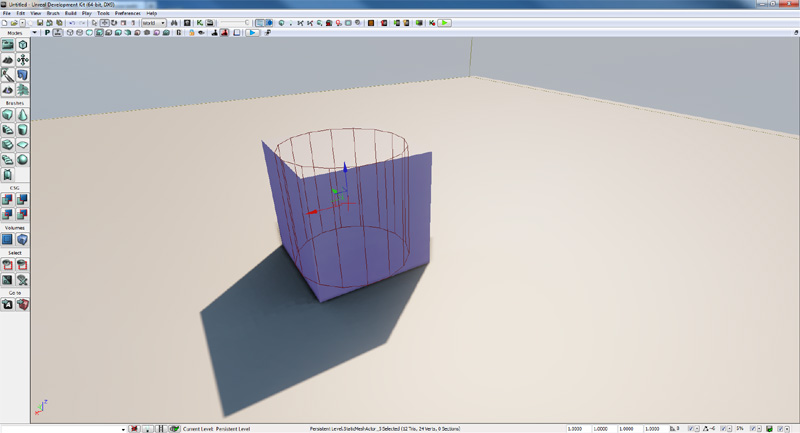 Then select the static mesh, right click and choose Set Collision From Builder Brush from the context menu. This will take into account any scaling you may have applied to the static mesh. 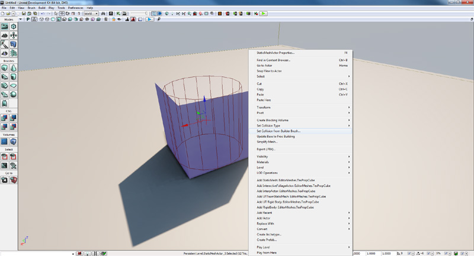 It is very important to note that this collision will be added to all instances of the static mesh you have selected. To see the effect of saving the brush as collision you will have to save the package that contains the static mesh. 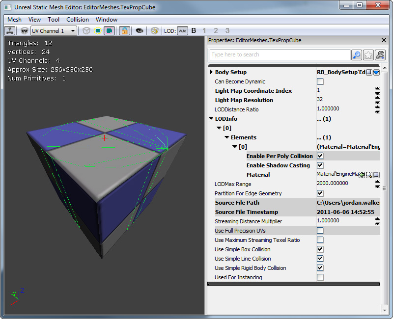Creating a collision hull using the K-DOP tool
K-DOP is a tool in the Static Mesh Editor for generating simple collision hulls. K-DOP is a type of bounding volume, which stands for K discrete oriented polytope (where K is the number of axis aligned planes). Basically it takes K axis-aligned planes and pushes them as close to the mesh as it can. The resulting shape is used as a collision hull. In the Static Mesh Editor K can be:- 6 - Axis-aligned box.
- 10 - Box with 4 edges beveled - you can choose X- Y- or Z-aligned edges.
- 18 - Box with all edges beveled.
- 26 - Box with all edges and corners beveled.
Creating a collision hull using the Sphere Simplified Collision
This tool simply wraps a sphere around the static mesh so that every part of the static mesh is within it. This is of course best used for static meshes that some what resemble a sphere. 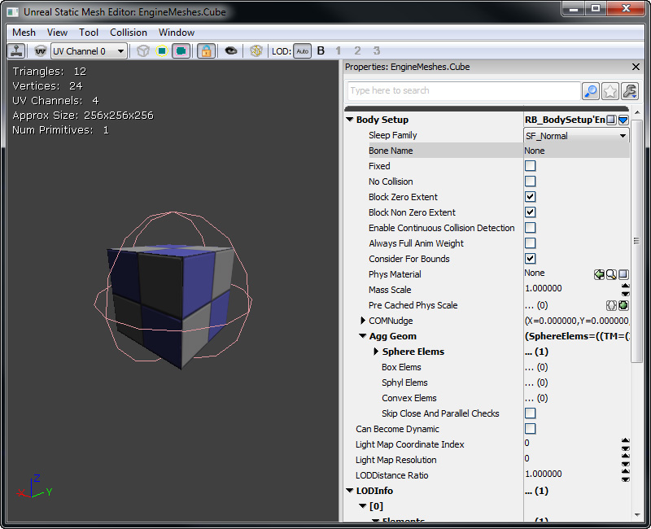Creating a collision hull using the Auto Convex Collision tool
This tool attempts to build a set of convex collision hulls for the static mesh. By adjusting the parameters, you can adjust how the convex hulls are created. 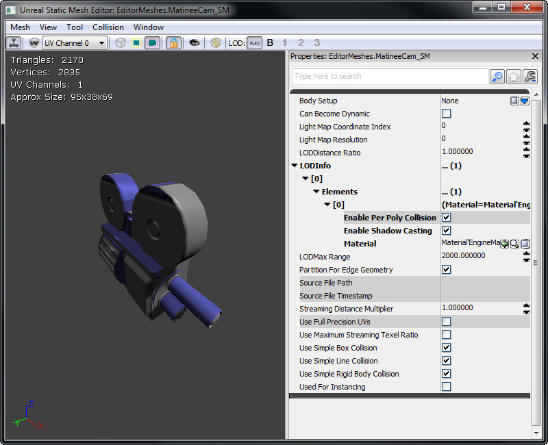- Depth - Determines how deep to go into the mesh. Adjusting this parameter may help conform the collision hull with the static mesh more closely.
- Max Hull Verts - Maximum number of collision hull vertices. Increasing this value increase how complex the collision hulls are allowed to be.
- Allow Splits - Maximum number of splits allowed. Increasing this value increase how many collision hulls are created.
Creating a collision hull using your 3D Content Creation Package
Please see FBX Static Mesh Pipeline on how to create static mesh collision hulls within a 3D content creation package.Volumes
These are invisible BSP which can collide against actors in game. The example below will show you how to make a blocking volumes. Volumes can be both blocking collision and non blocking collision.How to create a blocking volume
First make the builder brush the correct shape. 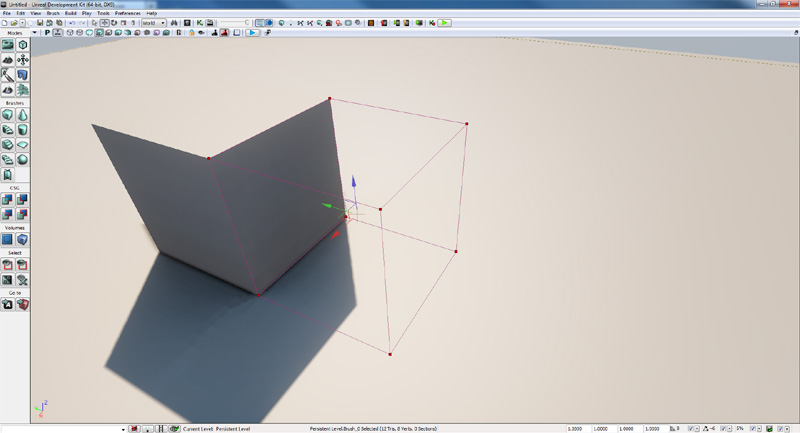 Right click on the Volume button in Unreal Editor and select BlockingVolume from the list. 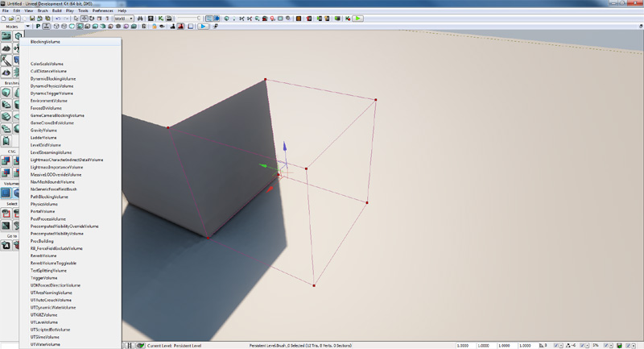 These are generally used to block actors from reaching certain areas of the level.
Examples
Player Movement and Weapon Fire
For proper player movement, specifically, having a collision cylinder to be used for Pawn movement and collision with other Pawns, while using the kinematic bones for accurate collision detection (e.g. when tracing rays for shots), consider the following:- Unreal physics (eg. PHYS_Walking) will sweep out the axis aligned bounding box of just the CollisionComponent. Using a SkeletalMeshComponent as the CollisionComponent when using PHYS_Walking is a bad idea, because it changes shape a lot as the character animates.
- A line check will check against all PrimitiveComponents attached to an Actor, if they have CollideActors and BlockZeroExtent set set to true.
- You do not need to have a PhysicsAssetInstance and kinematic bones to do line checks against bones. Simply having a PhysicsAsset assigned and having CollideActors and BlockZeroExtent set to true should result in you getting line check results (assuming the component is attached).
- RBChannel/RBCollideWithChannel only affects physics engine collision. If your player is using PHYS_Walking, it will have no effect.
Reviewing Collision In-Game
- show collision - This will draw all collision models and blocking volumes in use in the level.
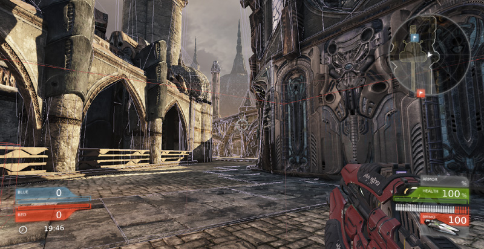 - show zeroextent - Show collision in the level as if you were a zero extent trace. Invisible objects have no collision.
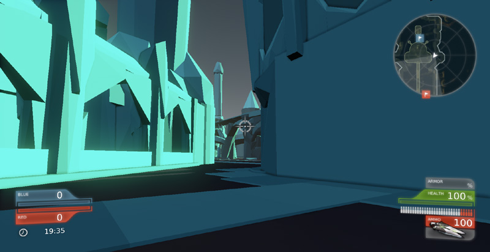 - show nonzeroextent - Show collision in the level as if you were a non zero extent trace.
- show rigidbody - Show collision in the level as if you were a rigid body (note, this does not show the effect of RBCC filter groups, only BlockRigidBody and UseSimpleRigidBodyCollision).
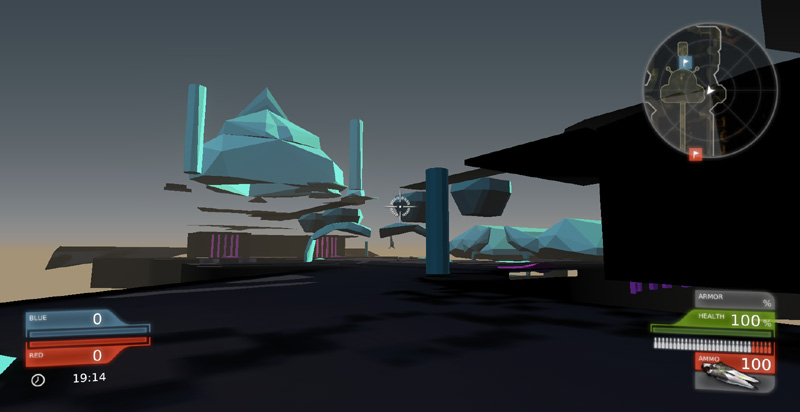
- nxvis collision - This shows you the PhysX collision information for the level, so you can see what rigid bodies are colliding with.
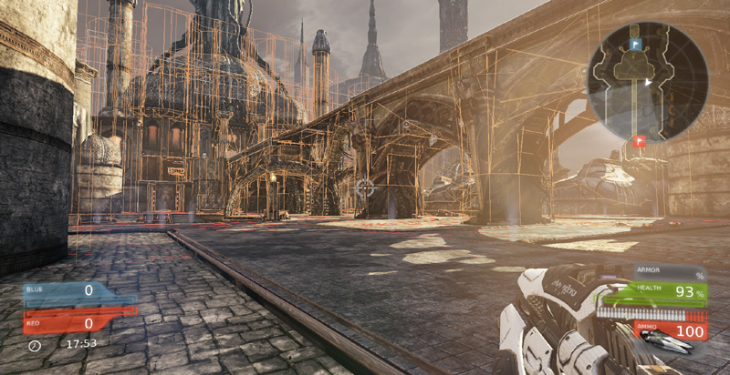 - stat game - This shows you various useful stats on how long different types of collision are taking.
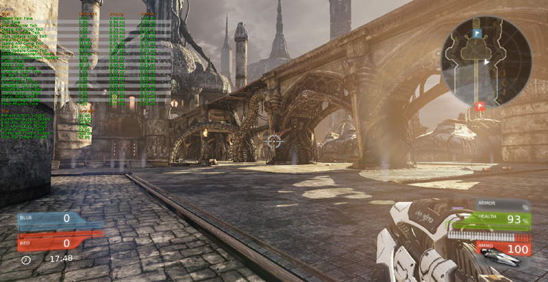